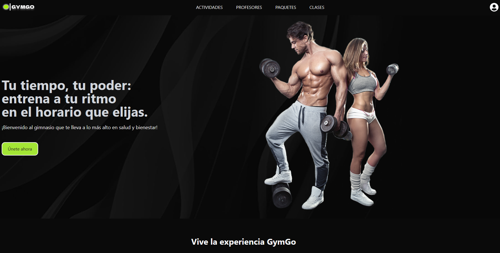

<main>
    <section #sliderContainer class="containerCard" [style.transform]="'translateX(' + translateX + 'px)'">
        <div>
            
            <p class="texto">Esta aplicación web está creada para apoyarte en la adopción de un estilo de vida saludable y activo. Con un enfoque integral en el bienestar físico y mental, la aplicación presenta una variedad de características diseñadas para ayudarte a alcanzar tus objetivos de fitness y salud. Ya sea que busques mejorar tu condición física o trabajar en tu bienestar mental, esta aplicación está diseñada para acompañarte en tu viaje hacia un estilo de vida más saludable y equilibrado.?                
            </p>       
        </div>        
    </section>    
</main>


<!-- @for (card of cards; track $index) {
    @if($index !== currentIn){               
        
        <p>{{card.text}}</p>
        <div>
            
            <p class="texto">Esta aplicación web está creada para apoyarte en la adopción de un estilo de vida saludable y activo. Con un enfoque integral en el bienestar físico y mental, la aplicación presenta una variedad de características diseñadas para ayudarte a alcanzar tus objetivos de fitness y salud. Ya sea que busques mejorar tu condición física o trabajar en tu bienestar mental, esta aplicación está diseñada para acompañarte en tu viaje hacia un estilo de vida más saludable y equilibrado.?                
            </p>       
        </div> 
    }
} -->


